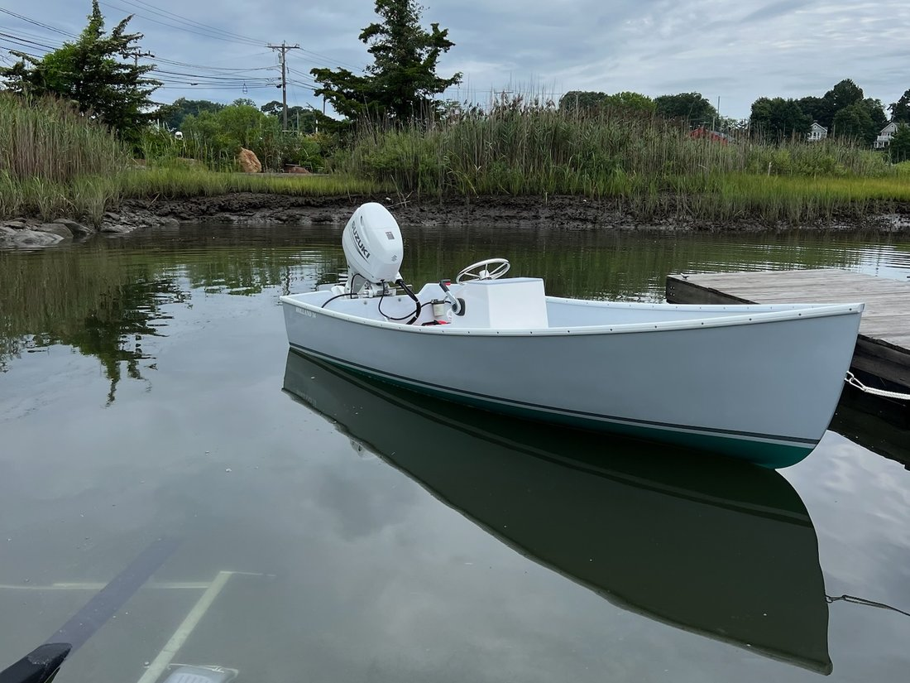
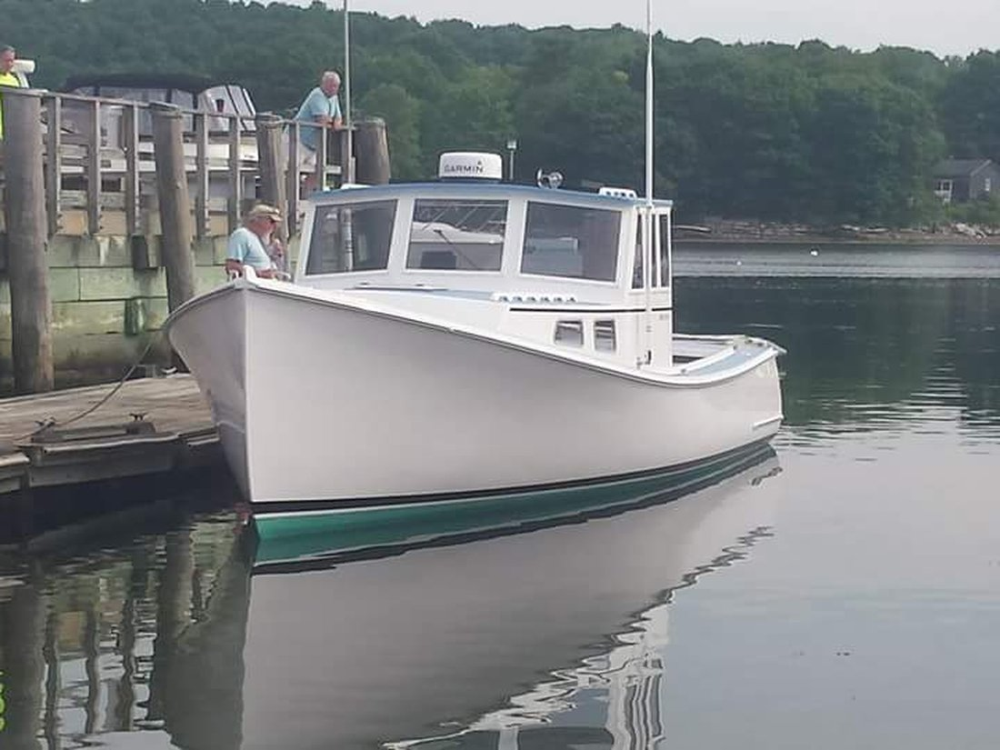

The Lineup
Five hulls, one shop
A quick look at the fleet — full specs and pricing live on the Models page.

Outboard Skiff
Holland 14'
A tiller-steer or center-console utility skiff, finished bow to transom with foam-cored construction.

Downeast Cruiser
Holland 32'
A solid-glass downeast hull available as a kit or finished boat, less engine, to your layout.

Flagship
Holland 38'
Our largest hull — a full 21' or 23' cockpit lobster yacht built for serious coastal miles.